ブログ一覧（更新順）

DevelopersIO https://dev.classmethod.jp
DevelopersIOは、AWS、クラウド、生成AI、データ分析、アプリ開発などの技術情報から、DXやイベントレポート、SaaSやPython、Google Cloudなど多彩なトピックを紹介するクラスメソッドのオウンドメディアです。
8分前

TechCrunch https://techcrunch.com/
TechCrunch | Reporting on the business of technology, startups, venture capital funding, and Silicon Valley
23分前
https://thinkit.co.jp/ https://thinkit.co.jp/
【Think IT】“オープンソース技術の実践活用メディア” をスローガンに、インプレスグループが運営するエンジニアのための技術解説サイト。開発の現場で役立つノウハウ記事を毎日公開しています。
30分前
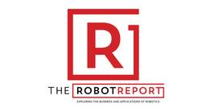
The Robot Report https://www.therobotreport.com/
The Robot Report provides robotics news, research, analysis and investment tracking for engineers, technology, and business professionals.
3時間前
Microsoft (有志)のフィード https://zenn.dev/p/microsoft
メンバーが選んだMicrosoft製品の最新技術情報・知見をお届けします。 ※このPublicationは日本マイクロソフトまたは米Microsoft所属社員による個人の見解であり、所属する組織の公式見解ではありません。 ※Publicationに参加希望の社員は @07JP27
3時間前
Hacker News - Japanese https://hevinxx.github.io/hn-summary-and-translate
Get Hacker News in your language with automatic summarization and translation
3時間前

Release notes from pytorch https://github.com/pytorch/pytorch/releases
Tensors and Dynamic neural networks in Python with strong GPU acceleration - pytorch/pytorch
3時間前
Menthas #all https://menthas.com
Menthas(メンタス)は、プログラマ向けニュースキュレーションサービスです。フロントエンドからインフラ、機械学習やVRといった様々なジャンルの最新情報を提供します。
3時間前

企業テックブログRSS https://yamadashy.github.io/tech-blog-rss-feed/
企業のテックブログの更新をまとめたRSSフィードを配信しています。記事を読んでその企業の技術・カルチャーを知れることや、質の高い技術情報を得られることを目的としています。
4時間前


Zennのトレンド https://zenn.dev
Zennはエンジニアが技術・開発についての知見をシェアする場所です。本の販売や、読者からのバッジの受付により対価を受け取ることができます。
14時間前


Storyboards - Speaker Deck
https://speakerdeck.com/c/storyboards
Uploading a storyboard with Speaker Deck is as easy as it gets. Discover our selection of uploaded storyboards now and get inspired!
20時間前

Hugging Face - Blog https://huggingface.co/blog
We’re on a journey to advance and democratize artificial intelligence through open source and open science.
21時間前
Fusic 技術ブログのフィード https://zenn.dev/p/fusic
さまざまな個性を受け入れて有機的につなぐ社内環境を整える。あらゆる事業機会の創出と実現を繰り返し、世の中に対する視点を絶えず増やして成長していく。あっと驚くような角度から発展できるポイントを見つけ、そこにいい感じにフィットする形でテクノロジーを組み込んで、世の中をちょっとずつ、時
1日前

piyolog https://piyolog.hatenadiary.jp/
piyokangoの備忘録です。セキュリティの出来事を中心にまとめています。このサイトはGoogle Analyticsを利用しています。
1日前
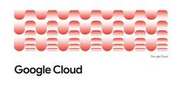
Google Cloud https://cloud.google.com/blog/products/gcp/
Find all the latest news about Google Cloud with customer stories, product announcements, solutions and more.
1日前

Cloudflare Blog https://blog.cloudflare.com/
Technical deep dives, product updates, and insights from the teams that are helping to build a better Internet.
1日前

Databricks https://www.databricks.com
Databricks offers a unified platform for data, analytics and AI. Build better AI with a data-centric approach. Simplify ETL, data warehousing, governance and AI on the Data Intelligence Platform.
1日前
アマゾン ウェブ サービス ジャパン (有志)のフィード https://zenn.dev/p/aws_japan
この Publication に投稿している記事は、アマゾン ウェブ サービス ジャパン合同会社または Amazon Web Services, Inc. 所属社員による個人の見解であり、所属する組織の公式見解ではありません。参加したい従業員の方は、Sugiyama Suguru
1日前
Accenture Japan (有志)のフィード https://zenn.dev/p/acntechjp
アクセンチュア株式会社に所属する社員有志による運営です。アクセンチュアの社員による様々な発信をまとめています。なお、投稿内容は社員個人の見解であり、所属する組織を代表するものではありません。
1日前


＠IT Security&Trustフォーラム 最新記事一覧 https://atmarkit.itmedia.co.jp/ait/subtop/security/
企業ネットワークセキュリティのためのノウハウ＆情報フォーラム
1日前

Supabase Blog https://supabase.com
Build production-grade applications with a Postgres database, Authentication, instant APIs, Realtime, Functions, Storage and Vector embeddings. Start for free.
1日前
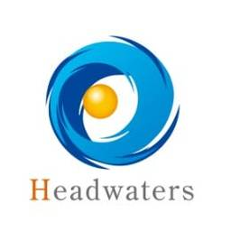
ヘッドウォータースのフィード https://zenn.dev/p/headwaters
株式会社ヘッドウォータースのテックブログです。 AIエージェント、生成AI、Azure、GitHub Copilot、IoT、XR系などData&AIとApp modernizeに関して幅広く投稿します！
1日前

CyberAgent Developers Blog | サイバーエージェント デベロッパーズブログ https://developers.cyberagent.co.jp/blog
サイバーエージェントのエンジニア・クリエイター・テクニカルクリエイターが執筆する公式ブログです。サイバーエージェントの技術情報を日々発信していきます。
2日前
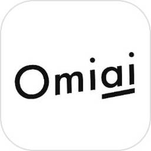
Omiai Tech Blogのフィード https://zenn.dev/p/omiai_techblog
マッチングアプリ『Omiai』を開発・運営する、株式会社Omiaiのテックブログです。
2日前
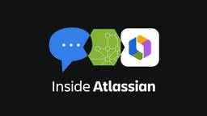
Inside Atlassian https://www.atlassian.com/blog/
Research, expert perspectives, and product announcements from Atlassian on how teams can work smarter with AI. Subscribe for monthly insights on the future of teamwork.
2日前

GMO Developers https://developers.gmo.jp
「GMO Developers」は、GMOインターネットグループが開発者向けの技術情報やイベント情報をお届けするテックブログです。
2日前

サイバーセキュリティ・情報漏洩ニュース – サイバーセキュリティ.com https://cybersecurity-jp.com
サイバーセキュリティーサービスの比較・資料請求サイト｜中小企業向けのセキュリティ対策を考える「サイバーセキュリティ」に関する情報メディア。日本の中小企業の情報を守るため、最新のセミナー・人材育成・製品・中小企業向けのセキュリティ対策を考えるサイバーセキュリティ情報サイトです。
2日前

InfoQ - ニュース https://www.infoq.com/jp
プロのソフトウェアエンジニアが執筆。世界中で150万人以上の開発者が愛読。開発チームに最新のテクノロジーと事例をお届け。
2日前

Apple Machine Learning Research https://machinelearning.apple.com
Apple machine learning teams are engaged in state of the art research in machine learning and artificial intelligence. Learn about the latest advancements.
2日前


Changelog — Neon Docs https://neon.com
The backend for apps and agents. Build with Lakebase Postgres, Auth, Functions, Storage, and an AI Gateway: instant, branchable, serverless.
2日前

ScanNetSecurity https://scan.netsecurity.ne.jp/
サイバーセキュリティ専門ニュース媒体 ScanNetSecurity（スキャンネットセキュリティ）は、1998年に日本で最初に創刊されたセキュリティ専門誌です。
2日前


セキュリティ － TechTargetジャパン 最新記事一覧 https://techtarget.itmedia.co.jp/tt/security/
セキュリティは、エンドポイントセキュリティやネットワークセキュリティなど、セキュリティ関連のIT製品・サービスの選定と導入を支援するメディアです。企業のIT部門担当者向けにセキュリティ製品の比較や導入事例、技術情報などの記事を掲載します。
2日前

The latest security news for developers - The GitHub Blog
https://github.blog/security/
The latest security news from GitHub, including security-related product updates.
2日前

Publickey https://www.publickey1.jp/
Enterprise ITに軸足を置き、新たにIT業界を変えつつあるクラウドコンピューティングやHTML5など最新の話題を、ブロガー独自の分析を交え、充実した記事で紹介するブログです。毎日更新しています。
2日前

Google DeepMind News https://deepmind.google/blog/
Discover our latest AI breakthroughs, projects, and updates.
2日前

DeNA Engineering on DeNA Engineering https://engineering.dena.com/
DeNA Engineering は、DeNAのエンジニアの技術・文化・チーム等を伝えるポータルサイトです。
2日前

Microsoft Azure Blog https://azure.microsoft.com/en-us/blog/
Azure helps you build, run, and manage your applications. Get the latest news, updates, and announcements here from experts at the Microsoft Azure Blog.
2日前

株式会社ZOZO の記事 https://qiita.com
Qiitaは、エンジニアに関する知識を記録・共有するためのサービスです。 プログラミングに関するTips、ノウハウ、メモを簡単に記録 & 公開することができます。
3日前

Discord Blog https://discord.com
Discord is great for playing games and chilling with friends, or even building a worldwide community. Customize your own space to talk, play, and hang out.
3日前

GitLab https://about.gitlab.com/blog
Tutorials, product information, expert insights, and more from GitLab to help DevSecOps teams build, test, and deploy secure software faster.
3日前

Elastic Blog - Elasticsearch, Kibana, and ELK Stack https://www.elastic.co
Power insights and outcomes with The Elasticsearch Platform. See into your data and find answers that matter with enterprise solutions designed to help you accelerate time to insight. Try Elastic toda...
3日前

Redis Blog https://redis.io/en/blog
The latest on what's happening at Redis, from company news, and product announcements to tips, tricks, and how-to information for database developers.
3日前
ClickHouse Blog https://clickhouse.com/blog
Learn about the latest ClickHouse tips, tricks and company announcements.
3日前
エアークローゼットテックブログのフィード https://zenn.dev/p/aircloset
株式会社エアークローゼットは「発想とITで、人々の日常に新しいワクワクを創造する」をミッションに、ファッションレンタルプラットフォーム"airCloset"や、話題の商品のお試し利用が可能な家具家電レンタルサービス"airClosetMall"といった事業を展開しています。
3日前


Salesforce Engineering Blog https://engineering.salesforce.com/
Read the latest articles on the Salesforce Engineering blog. Go behind the cloud with Salesforce Engineers.
3日前

Microsoft Security Blog https://www.microsoft.com/en-us/security/blog/
Read the latest news and posts and get helpful insights about Home Page from Microsoft’s team of experts at Microsoft Security Blog.
3日前

Node.js Blog https://nodejs.org/en
Node.js® is a free, open-source, cross-platform JavaScript runtime environment that lets developers create servers, web apps, command line tools and scripts.
3日前

Latest News - Apple Developer https://developer.apple.com/news/
Learn about the latest technologies, events, and policies for developers.
3日前

Docker https://www.docker.com
Docker is a platform designed to help developers build, share, and run container applications. We handle the tedious setup, so you can focus on the code.
3日前

The Trail of Bits Blog https://blog.trailofbits.com/
Since 2012, Trail of Bits has helped secure some of the world's most targeted organizations and products. We combine high-end security research with a real world attacker mentality to reduce risk an...
3日前
PKSHAテックブログ のフィード https://zenn.dev/p/pksha
株式会社 PKSHA Technologyおよびグループ会社のエンジニアが実務から得た学びを発信します。 チームやプロダクトの紹介はぜひnoteもご覧ください。
3日前

Blog RSS Feed | Snyk https://snyk.io
Snyk is the AI Security Fabric — the independent validator that makes AI-generated code, AI agents, and AI-native applications trustworthy. Unleash AI innovation securely.
3日前


Release notes from milvus https://github.com/milvus-io/milvus/releases
Milvus is a high-performance, cloud-native vector database built for scalable vector ANN search - milvus-io/milvus
4日前


DuckDB https://duckdb.org/
DuckDB is an in-process SQL OLAP database management system. Simple, feature-rich, fast & open source.
4日前

The latest from GitHub's engineering team - The GitHub Blog https://github.blog/engineering/
See what the GitHub Engineering team is up to—from building features to solving the nagging challenges teams face as they grow.
4日前

NVIDIA Technical Blog https://developer.nvidia.com/blog
News and tutorials for developers, scientists, and IT admins
4日前
AI https://blog.google/innovation-and-ai/technology/ai/
Explore the cutting-edge work Google is doing in AI and machine learning.
4日前

LINEヤフー Tech Blog (LY Corporation Tech Blog https://techblog.lycorp.co.jp
LINEヤフー株式会社のサービスを支える、技術・開発文化を発信しています。
5日前
Yelp Engineering and Product Blog https://engineeringblog.yelp.com/
Migrating a Large Flow Monorepo to TypeScript Shawn Walton, Software Engineer Aug 4, 2026 In early 2017, Webcore selected Flow as Yelp’s next-generation typechecker over TypeScript. At the time there....
5日前

Rust Blog https://blog.rust-lang.org/
Empowering everyone to build reliable and efficient software.
5日前

RedditEng https://www.reddit.com/r/RedditEng/
Welcome to the Reddit Tech Blog. We'll be talking about how we contribute to Reddit's mission to empower communities and make their knowledge accessible to everyone. Read about how we build stuff peop...
5日前

Microsoft Research https://www.microsoft.com/en-us/research/
Explore research at Microsoft, a site featuring the impact of research along with publications, products, downloads, and research careers.
5日前

Kubernetes Blog https://kubernetes.io/
Kubernetes, also known as K8s, is an open source system for automating deployment, scaling, and management of containerized applications. It groups containers that make up an application into logical ...
5日前


CARTA TECH BLOG https://techblog.cartaholdings.co.jp/
CARTA HOLDINGS公式エンジニアブログです。CARTA HOLDINGSのエンジニアリング関連の情報、 イベント, エンジニアたちの様子などを投稿しています。
5日前

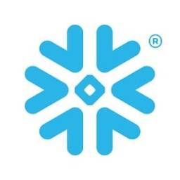
Snowflake Japanのフィード https://zenn.dev/p/snowflakejp
Snowflake に関する最新の技術情報をお届けします。 ※この Publication は Snowflake Japan オフィスに所属する個人の見解であり、所属する組織の公式見解ではありません。
6日前

Security Advisory for Python packages hosted at PyPI.org https://github.com/advisories?query=type%3Areviewed+ecosystem%3Apip
A database of software vulnerabilities, using data from maintainer-submitted advisories and from other vulnerability databases.
6日前

Grafana Labs blog on Grafana Labs https://grafana.com/blog/
News, announcements, articles, metrics & monitoring love...
8日前
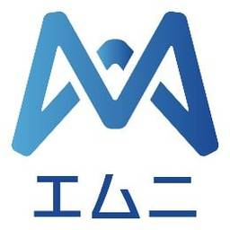
株式会社エムニのフィード https://zenn.dev/p/emuni
エムニは「AIで働く環境を幸せに、世界にワクワクを」をミッションに掲げ、製造業に特化したオーダーメイドAI開発およびSaaSを展開する松尾研・京都大学発のAIスタートアップです。
8日前

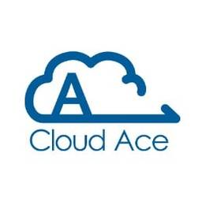
クラウドエース株式会社さんのフィード
https://zenn.dev/cloud_ace
クラウドエース株式会社 公式技術ブログです ｜仕事の依頼について▶ https://cloud-ace.jp/service/ ｜採用について（公式note）▶ https://cloud-ace-recruit.com/ ※本サイトに掲載されている商品またはサービスなどの名称
9日前


株式会社エクスプラザのフィード https://zenn.dev/p/explaza
「プロダクトの力で、豊かな暮らしをつくる」をミッションに、法人向けに生成AIのPoC、コンサルティング〜開発を支援する事業を展開しております。 エンジニア募集しています。カジュアル面談応募はこちらから: https://herp.careers/careers/companies
11日前

Nulab (Japanese) https://nulab.com/ja/
数百万人ものユーザーがヌーラボのサービスを使用して、チームのコミュニケーションを改善しています。ヌーラボのオンラインコラボレーションツールで、あなたのチームの仕事をもっと楽しくしましょう。
12日前
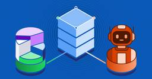
Spotify Engineering https://engineering.atspotify.com/
Our R&D teams tell the stories behind how we build at Spotify. AI, mobile, web, data science, experimentation, developer tools, design, open source, and more.
12日前
MIXI DEVELOPERS Tech Blogのフィード https://zenn.dev/p/mixi
株式会社MIXIのZenn版テックブログです。実務で得た技術知見や個人的に調べたことなどを紹介しています。
12日前

Microsoft for Developers https://devblogs.microsoft.com/
Microsoft for Developers - Get the latest information, insights, and news from Microsoft.
16日前
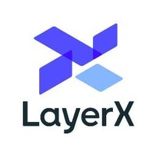
LayerXのフィード https://zenn.dev/p/layerx
すべての経済活動を、デジタル化する。SaaS + Fintech に取り組む LayerX のエンジニアの記事が集まる Publication です。
16日前

Datadog | Engineering blog https://www.datadoghq.com/
See metrics from all of your apps, tools & services in one place with Datadog’s cloud monitoring as a service solution. Try it for free.
18日前

IPAセキュリティセンター:重要なセキュリティ情報 https://www.ipa.go.jp/index.html
独立行政法人情報処理推進機構（IPA）は経済産業省のIT政策実施機関です。多彩な施策でデータとデジタルの時代を牽引し、安全で信頼できるIT社会を実現します。
18日前

Stripe Blog https://stripe.com/blog
Follow the Stripe blog to learn about new product features, the latest in technology, payment solutions, and business initiatives.
19日前


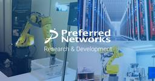
Preferred Networks Tech Blog https://tech.preferred.jp
Preferred Networks (PFN) の公式R&Dサイトです。機械学習・深層学習・基盤モデル・計算基盤など、PFNの様々な研究開発に関して、国際学会の論文やリサーチャー・エンジニアのブログなどを通じて情報発信していきます。
23日前

tech-at-instacart - Medium https://tech.instacart.com?source=rss----587883b5d2ee---4
Instacart Engineering
25日前

Engineering at Slack https://slack.engineering
A deep dive into the technology behind building Slack. Written by engineers, for engineers passionate about solving complex technical problems.
25日前
Security Advisory for JavaScript packages hosted at npmjs.com https://github.com/advisories?query=type%3Areviewed+ecosystem%3Anpm
A database of software vulnerabilities, using data from maintainer-submitted advisories and from other vulnerability databases.
1ヶ月前


MongoDB | Blog
https://www.mongodb.com/blog
MongoDB's blog includes technical tutorials, MongoDB best practices, customer stories, and industry news related to the leading non-relational database.
1ヶ月前
Google Cloud Japanのフィード https://zenn.dev/p/google_cloud_jp
Google Cloud Japan のエンジニアを中心に情報発信をしている Publication です。Google Cloud サービスの技術情報を中心に公開しています。各記事の内容は個人の意見であり、企業を代表するものではございません。
1ヶ月前

Mozilla Hacks – the Web developer blog https://hacks.mozilla.org/
Mozilla Hacks is written for web developers, designers and everyone who builds for the Web. Hacks is produced by Mozilla's Developer Relations team and features hundreds of posts from Mozilla ...
2ヶ月前
GMOメディアテックブログのフィード https://zenn.dev/p/gmomedia
GMOインターネットグループの一員であるGMOメディアは、BtoC向けの様々なインターネットサービスを提供し続けています。サービスをより良くしてユーザーに良い体験を提供すべく一緒に働くメンバーを募集しています。全エンジニアにGitHub Copilot / Claude Code
2ヶ月前
developer.chrome.com: Blog https://developer.chrome.com/blog/
Tin tức mới nhất từ nhóm Quan hệ với nhà phát triển Chrome
2ヶ月前
Security Advisory for Github Actions https://github.com/advisories?query=type%3Areviewed+ecosystem%3Aactions
A database of software vulnerabilities, using data from maintainer-submitted advisories and from other vulnerability databases.
2ヶ月前


React Blog https://react.dev/
React is the library for web and native user interfaces. Build user interfaces out of individual pieces called components written in JavaScript. React is designed to let you seamlessly combine compone...
6ヶ月前


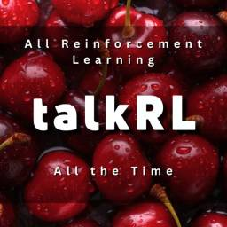
TalkRL: The Reinforcement Learning Podcast https://www.talkrl.com
TalkRL podcast is All Reinforcement Learning, All the Time. In-depth interviews with brilliant people at the forefront of RL research and practice. Guests from places like MILA, OpenAI, MIT, DeepMi...
9ヶ月前


徳丸浩の日記 https://blog.tokumaru.org/
[PR]<a href="https://en-gage.net/eg-secure_career/">EGセキュアソリューションズ株式会社はエンジニアを募集しています</a>
2年前
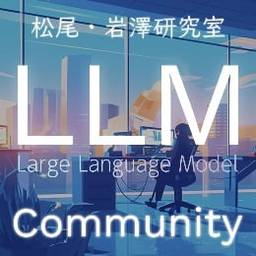
東大松尾・岩澤研究室 | LLM開発 プロジェクト[GENIAC]のフィード https://zenn.dev/p/matsuolab
東京大学 松尾・岩澤研究室が運営する松尾研LLMコミュニティのLLM開発プロジェクト[GENIAC] の開発記録、情報発信になります。 各種リンクはこちら https://linktr.ee/matsuolab_community
2年前

Qdrant Articles on Qdrant - Vector Search Engine https://qdrant.tech/articles/
Articles about vector search and similarity larning related topics. Latest updates on Qdrant vector search engine.
2年前

Qdrant - Vector Search Engine https://qdrant.tech/
Qdrant is an Open-Source Vector Search Engine written in Rust. It provides fast and scalable vector similarity search service with convenient API.
2年前


DSAS開発者の部屋
http://dsas.blog.klab.org/
DSASとはKLab(株)が構築し運用しているコンテンツサービス用のプラットフォームです。Linuxベースのクラスタリングシステムで、高い信頼性、可用性、柔軟性を備え低コストで運用できるのが特徴です
5年前
TECHSCORE BLOG https://www.techscore.com/blog
TECHSCORE BLOG は,シナジーマーケティング株式会社のエンジニアが運営するブログサイトです。エンジニアが情報収集をするために押さえておきたいWebサイトになれるよう頑張ります！ぜひ、チェックしてみてください。
6年前